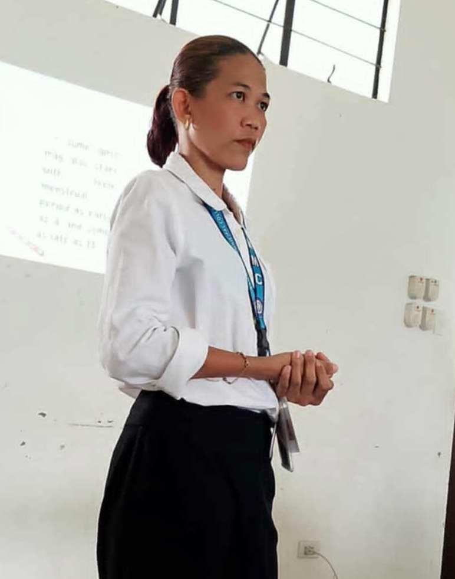
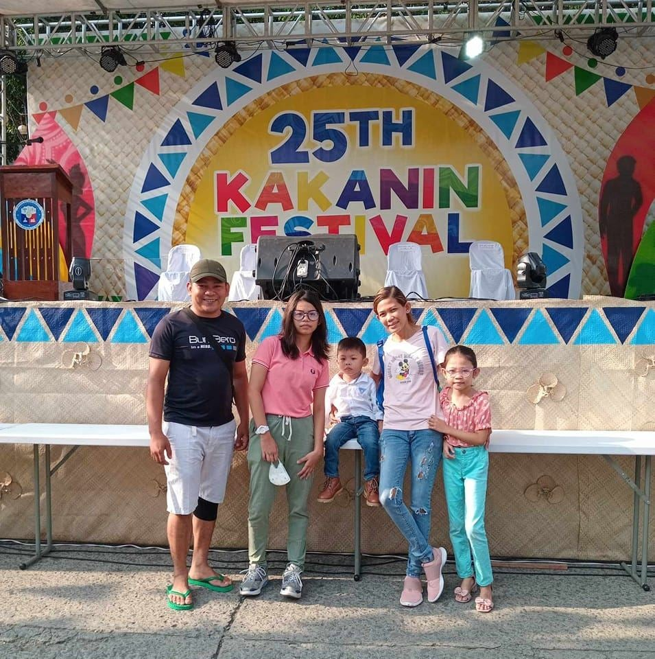

Profile

Full Name:Jenalyn San Diego
Nickname: Jen
Residence:Risa Village, San Mateo, Rizal8
I was born on February 28, 1988, in Barangay Pag-asa, Santa Cruz, Marinduque, where I also grew up. My parents are still living in the province up to this day. Ever since I got married, I have been living here in San Mateo, Rizal for 16 years now.

I am a proud mother of three children, and my husband is currently working as a firefighter.
At present, I am a First Year College student. Even though I am already in my late 30s, I decided to pursue my studies because I am the only one among my siblings who has not yet finished college. It is my dream to graduate and become a teacher, so I am working hard to achieve this goal for myself and my family.